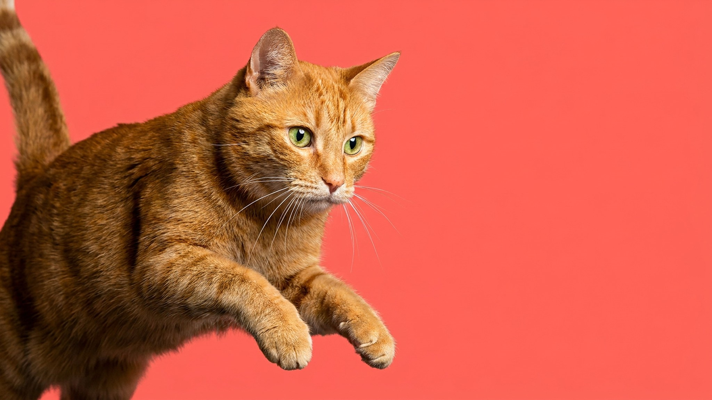

Скотч-терьер (Scottish Terrier, скотти) весит около 9 кг и выглядит как живая сигара с бородой — но за этой внешностью спрятан характер, с которым не поспоришь. Норный охотник из шотландских нагорий, привыкший действовать в одиночку под землёй: отсюда независимость, решимость и полное неприятие приказного тона. Ниже — как устроен скотти изнутри и почему тримминг, а не машинка, — это не каприз грумера, а необходимость.
🐾 Питомец ведёт себя странно?
AnimaLife расшифрует поведение кошки и собаки и подскажет, что делать. Попробуйте бесплатно прямо в мессенджере.
Scottish Terrier веками работал без хозяина рядом — прочёсывал норы самостоятельно. Результат: скотти принимает собственные решения, плохо реагирует на принуждение и медленно устанавливает доверие с новыми людьми. К хозяевам он предан безгранично, но показывает это по-своему — без суетливых ласк, рядом и молча.
Скотч-терьер — компактный, но не диванный. Ему нужны две прогулки в день по 30–40 минут с возможностью понюхать и исследовать. Бег трусцой рядом с велосипедом — лишнее: порода коротконогая и выносливая, но не скоростная. Зато нос работает на полную — дайте скотти обнюхать маршрут, это для него полноценная умственная нагрузка.
Копание — встроенная программа. Если есть доступ к земле, скотти обязательно оставит в ней ямы. На даче это нужно учитывать заранее: либо огородить грядки, либо отвести «разрешённый» участок для раскопок.
Скотти обучаем, но не послушен в классическом смысле. Он понимает команды, но принимает решение — выполнять или нет — самостоятельно. Давление и повторяющиеся монотонные упражнения вызывают у него игнорирование или протест. Работает только одно: короткая сессия (5–7 минут), высокоценное вознаграждение и смена заданий.
Базовый курс послушания стоит пройти: скотти с фундаментом команд безопаснее на прогулке и проще в быту. Начинайте в щенячьем возрасте — характер закладывается рано.
Шерсть Scottish Terrier — жёсткая, проволочная, двуслойная. Её структура и насыщенный чёрный или пшеничный цвет держатся только до тех пор, пока волос растёт правильно. Стрижка машинкой срезает верхушку, оставляя мягкий подшёрсток: через несколько циклов шерсть становится ватной, теряет цвет и защитные свойства. Восстановить её потом трудно.
Скотч-терьер — не первая собака для новичка. Он требует последовательного хозяина, который понимает: это не пёс-исполнитель, а партнёр с собственным мнением. Отлично подходит занятым людям, живущим в квартире: скотти не требует двора, не лает без повода и легко адаптируется к городскому ритму. Если вам нужна собака с характером и харизмой — скотти не разочарует.
🐾 Здоровье питомца под контролем
AI-ветеринар, дневник здоровья и персональные советы для вашего питомца — установите AnimaLife бесплатно.
🐾 Понравился разбор?
Подпишитесь на канал — каждый день разбираем по одному тревожному симптому у кошек и собак: что в пределах нормы, а когда пора к врачу. Подпишитесь, чтобы не пропустить разбор, который может спасти здоровье вашего питомца.
Материал носит информационный характер и не заменяет очную консультацию ветеринара.